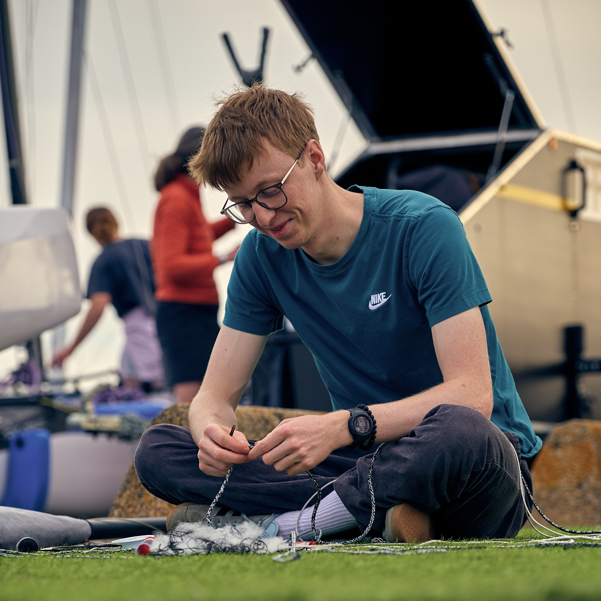

Alternant au sein de Naval Group et en 2ème année de BUT Génie Mécanique et Productique, j'aime particulièrement la CAO et les calculs de dimensionnement des structures.
Passionné par le monde maritime, je cherche à allier mes compétences acquises à mon intérêt pour le monde maritime.
Apprentissage
Naval Group
Naval Group est le spécialiste français de la construction et de la maintenance de navires de guerre et de sous-marins depuis plus de trois siècles. Forte d’une expertise reconnue à l’international, l’entreprise s'incrit parmis les leaders mondiaux alliant rigueur technique et exigence qualité.
Depuis septembre 2024, j’évolue chez Naval Group en tant qu’Intégrateur-Projeteur en alternance. Mon rôle :
- Modélisation 3D
Créer et mettre à jour les maquettes numériques des structures navales en respectant les spécifications techniques.
- Analyse de résistance
Réaliser des calculs de dimensionnement pour vérifier le comportement des pièces et anticiper les contraintes en conditions réelles
- Coordination interservices
Travailler avec les experts métiers pour garantir la cohérence et la robustesse de l’ensemble des systèmes.
- Veille technique et innovation
Surveiller les évolutions des matériaux et des procédés de fabrication, et proposer des améliorations concrètes pour optimiser les performances et la sécurité des navires.
- Revues de conception
Présenter mes maquettes et résultats d’analyse, recueillir les retours de l’équipe et ajuster les dossiers de définition pour aboutir à une solution validée.
- Suivi documentaire et conformité
Mettre à jour les plans et les rapports d’analyse, en assurant la traçabilité et la qualité des livrables destinés aux phases de fabrication et de maintenance.
Chacune de ces missions me permet de renforcer ma rigueur, d’enrichir mes compétences techniques et de contribuer de façon concrète aux projets d’envergure de Naval Group.
Stage de 1ère Année
Fountaine Pajot est une entreprise française, fondée en 1976, spécialisée dans la construction de catamarans de luxe, employant plus de 800 personnes sur trois sites de production (Aigrefeuille-d’Aunis, La Rochelle, Le Thou) et réalisant 277 M€ de chiffre d’affaires en 2023 (croissance de 26 % vs 2022).
Durant trois semaines au sein de l’atelier d’Aigrefeuille-d’Aunis, j’ai découvert les principales étapes de fabrication d’un catamaran :
Composite (drapage, infusion/injection, entretien de moules),
Avant-pontage (assemblage de modules, passage de câbles et tuyaux),
Après-pontage (connexions finales, installation des aménagements).
J’ai particulièrement exploré les métiers de stratification et d’accastillage, alternant entre drapage, collage de bandes structurelles et pose d’équipements de sécurité et de confort.
L’accueil et le tutorat ont grandement facilité mon intégration aux deux équipes (matin et après-midi) : j’ai pu poser toutes mes questions, gagner en autonomie et comprendre rapidement les exigences de chaque poste. J’ai apprécié l’esprit d’équipe, la propreté rigoureuse des lieux et la sensibilisation aux normes (zone ATEX, EPI obligatoires).
Ce stage m’a permis :
- D’appliquer des gestes techniques concrets et de maîtriser de nouveaux procédés métiers,
- De développer mon sens de l’organisation et du travail collaboratif,
- Et de confirmer mon intérêt pour l’industrie navale, même si la distance géographique ne m’oriente pas vers une alternance ultérieure chez Fountaine Pajot.